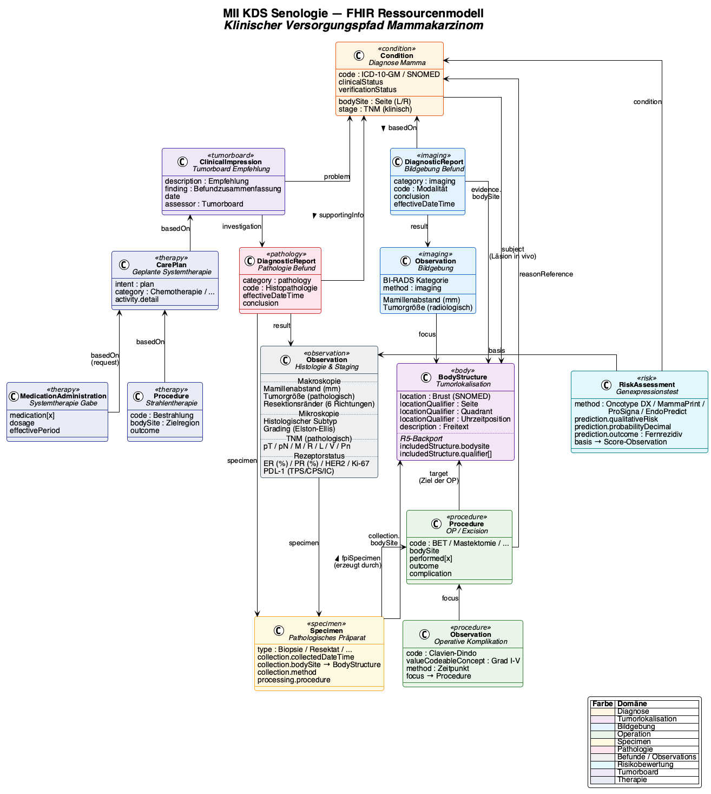

Senologie Core Dataset
0.10.0 -
Kerndatensatz Senologie - Local Development build (v0.10.0) built by the FHIR (HL7® FHIR® Standard) Build Tools. See the Directory of published versions

The Senology module is based on a logical model that structures the clinical data points of breast cancer care. This model is mapped to FHIR resources that are specified as profiles in this IG.
The Senology profiles inherit either from MII Core Dataset profiles (where oncological base structures are required) or directly from FHIR R4 base resources. The representation follows the clinical workflow: Information → Decision → Action.
Diagram will be added in a future version.
Diagram will be added in a future version.
Diagram will be added in a future version.
The profiles are linked to each other via FHIR references. The patient forms the central anchor point; the diagnosis is the clinical bracket for therapy and planning:
Diagram will be added in a future version.
The logical model (BIH_LM_Senologie) describes the clinical domain independently of the technical FHIR representation. It is oriented towards the documentation workflow of the breast centre (Brustzentrum) and the S3 guideline.
| Domain | Description | FHIR Resource(s) |
|---|---|---|
| Diagnosis | Malignant and benign breast diseases, laterality, diagnostic confirmation, metastasis | Condition, Condition (benign) |
| Presentation | Initial vs. follow-up visit with date | planned: Encounter |
| General Medical History | Quality of life (EQ-5D-5L) | planned: Observation |
| Gynaecological History (Gynäkologische Anamnese) | Menarche, menopause, pregnancies, HRT | Observation |
| Family History (Familienanamnese) | Breast/ovarian cancer in relatives | FamilyMemberHistory |
| Clinical Examination | Palpation, skin changes, nipples, lymph nodes | Observation |
| Breast Imaging | Mammography, sonography, MRI, tomosynthesis with BI-RADS/ACR | DiagnosticReport, Observation |
| Other Imaging | Staging imaging (bone scintigraphy, CT, PET-CT, etc.) | DiagnosticReport |
| Pathology | Histology, receptor status (ER, PR, HER2, Ki-67), B3 lesions | DiagnosticReport, Specimen |
| Tumour Localisation | Quadrant, clock-face position, distance from nipple | BodyStructure |
| Gene Expression Test | Oncotype DX, MammaPrint, Prosigna, EndoPredict | RiskAssessment, Observation |
| Surgery | Breast surgery with intent, sub-procedures, complications | Procedure |
| Surgical Planning | Pre-operative planning (duration, marking, positioning) | ServiceRequest |
| Surgical Complication | Clavien-Dindo classification | Observation |
| Systemic Therapy | Chemotherapy, hormone therapy, targeted therapy, immunotherapy | Procedure, MedicationStatement, MedicationRequest |
| Radiotherapy | Irradiation with dose, boost, fractionation | Procedure |
| Tumour Board (Tumorkonferenz) | Interdisciplinary therapy recommendations | CarePlan |
| Implant | Breast implants (type, manufacturer, serial number) | Device |
| Medication | Concomitant medication | planned: MedicationStatement |
| Study Participation | Clinical trials | planned: ResearchSubject |
Even though in clinical practice a surgical intervention is referred to as a single operation, accurate data representation requires the distinction into several sub-procedures:
A parent Procedure can be defined, to which the sub-procedures refer via Procedure.partOf. Exception: Observations and complications that explicitly relate to a specific sub-procedure (e.g. implant revision).
| System | Usage |
|---|---|
| SNOMED CT | Diagnoses, procedures, findings, medications |
| ICD-10-GM | Diagnosis coding (cancer registry, DRG) |
| LOINC | Laboratory values, imaging modalities |
| RadLex | Radiological finding categories (ACR, BI-RADS) |
| ATC | Drug classification |
| ASK | Drug substance catalogue (Arzneistoffkatalog) |
| OPS | Surgical and procedure key (Operationen- und Prozedurenschlüssel) |
| oBDS | Oncological core dataset (Onkologischer Basisdatensatz) |
ConceptMaps are available for the medication terminology, mapping SNOMED CT to ATC and ASK.